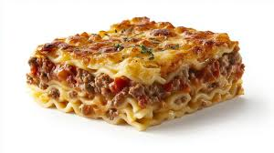

Lasagna Recipe
A simple hearty dish that reheats well. Use a favorite tomato sauce,
either homemade or jarred. To make it a really hearty meal, use a
bolognese sauce.

Ingredients
- 1 16 oz package lasagna
- Olive oil
- 2 large eggs, lightly beaten.
- 2 cups whole milk ricotta cheese
- 1/4 cup chopped parsley (or a tablespoon dried parsley)
- 1 tsp. salt
- 1/2 tsp. pepper
- 2 1/2 cups shredded mozzarella cheese, divided
- 1 1/2 cup grated parmesan cheese, divided
-
3 cups marinara sauce or
Bolognese sauce
Directions
- Preheat oven to 375°F.
- Prepare the pasta per package directions.
- While the pasta cooks prepare the cheese filling.
- Combine the eggs, ricotta, parsley, salt, and pepper in a bowl.
-
Add 1 1/2 cups of the mozzarella and 1 cup of the parmesan cheese. znd
stir to combine.
-
Toss prepared pasta with a little olive oil to prevent sticking and
allow to cool.
- Begin layering lasagna in 9 x 13 inch baking dish.
-
Add some sauce to the bottom of the dish and arrange pasta over the
sauce.
- Top pasta layer with another 1/2 cup of sauce and 1 cup of the cheese filling.
- Continue layering ending with sauce on top.
- Spread the remaining mozzarella and parmesan cheeses over the top, cover with foil and place in the oven.
- Bake for 30 minutes, remove foil and bake for another 30 minutes until bubbly.
- Remove from oven and let cool.
- Serve hot with extra sauce if desired.
- Enjoy!
- Lasagna is almost always better the next day. Reheat in the oven and Enjoy! again
Home